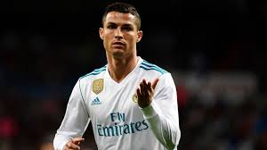
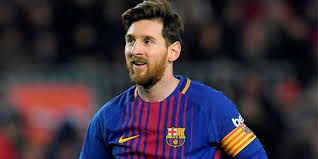
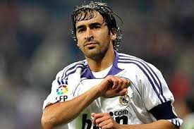
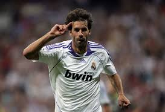
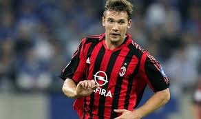
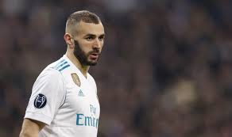
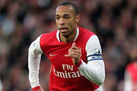
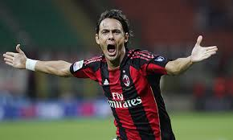
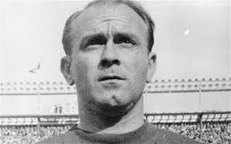
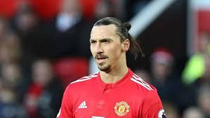

Top 10 dos maiores artilheiros da Champions
1º - Cristiano Ronaldo: 120 gols.

2º - Lionel Messi: 100 gols.

3º - Raul Gonzales: 71 gols.

4º - Ruud van Nistelrooy: 60 gols

5º - Andriy Shevchenko: 59 gols.

6º - Karim Benzema: 53 gols.

7º - Thierry Henry: 51 gols.

8º - Filippo Inzaghi: 50 gols.

9º - Alfredo Di Stéfano: 49 gols.

10º - Zlatan Ibrahimovic: 49 gols.
